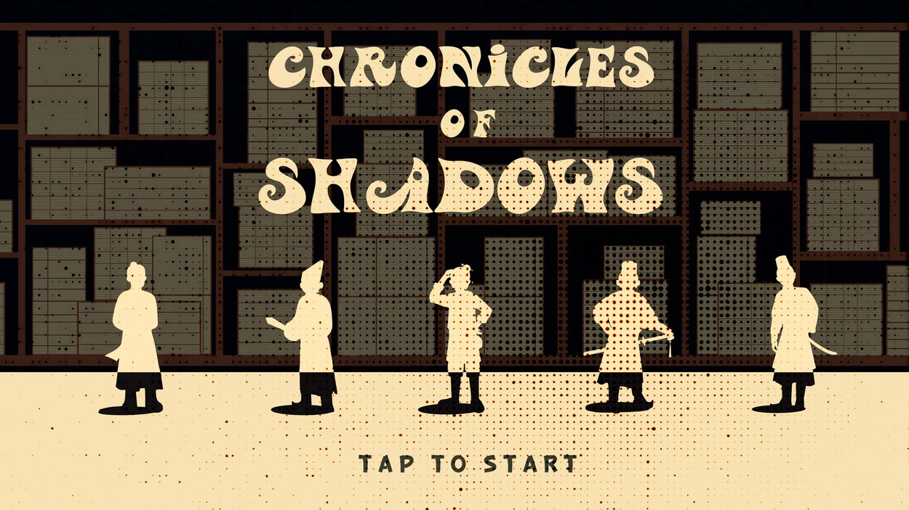
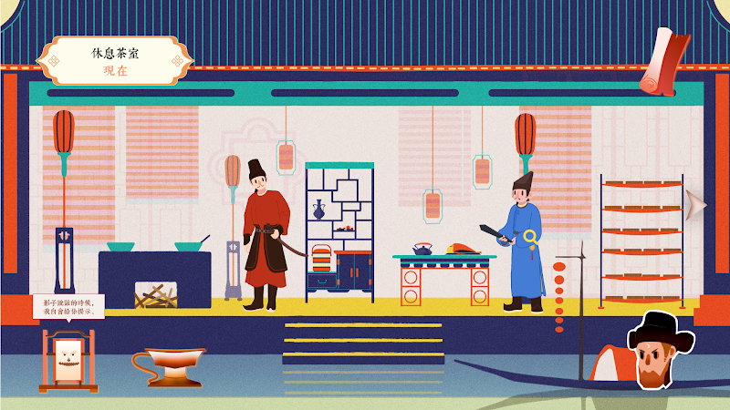
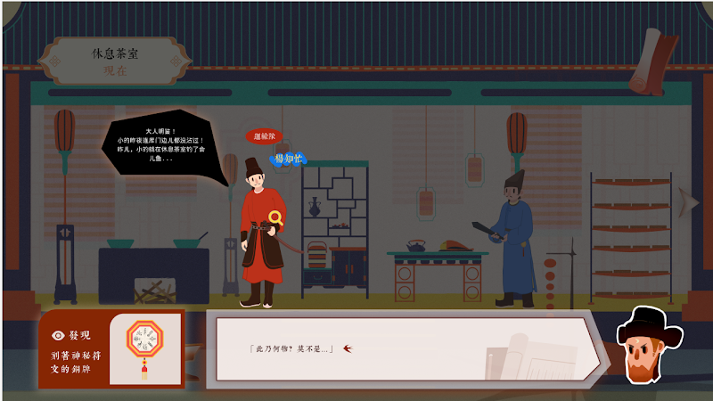
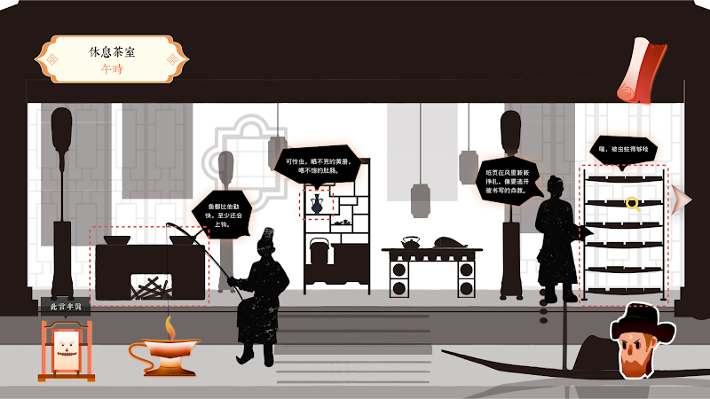
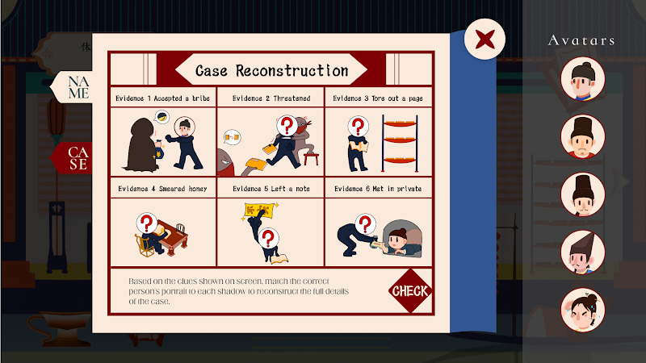

a mystery told in shadows
Chronicles of Shadows
Game Design
Narrative
Skills
UnityIllustratorC#
Type
Puzzle Game DesignGame DirectionGame ArtGame Development
2025 Mar–Jun · scroll down ↓
A narrative-driven indie game combining visual novel storytelling with deductive puzzle mechanics, set in historical China.

01 Title screen
The five suspects stand before a wall of ledgers, rendered as cutout silhouettes over a halftone ground. The whole game holds this two-tone treatment: cream figures, ink shelves.

02 The tea room, present day
The single location the case turns on. Players enter in full colour, in the present, and read the room before anything is asked of them.

03 Interrogation
Testimony arrives as speech bubbles with selectable keywords. Picking one adds it to the evidence board and opens the next line of questioning.

04 Shadow replay
Rewinding to noon strips the room to silhouettes. The same space replays as shadow theatre, with dashed frames marking what changed since the player last looked.

05 Case reconstruction
The endgame board: six pieces of evidence, five portraits, and one correct assignment of shadow to suspect. Getting all six right closes the case.